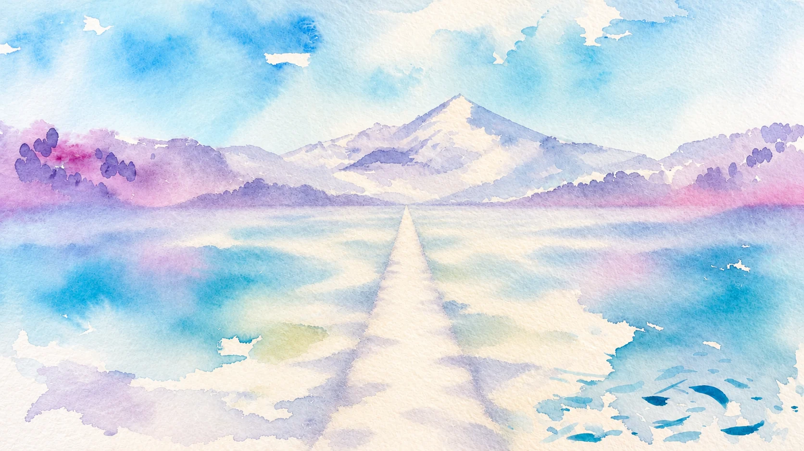

Follow the pathto the mountain
Scroll to walk
At the end of the path
The gallery
[Short introduction to the work, to be supplied]
Dordogne landscape in startling light[Year · medium]
[Painting title 2][Year · medium]
Fluttering leaves at the Observatory[Year · medium]
Étang, Ville d'Avray[Year · medium]
Reflections 02, on the water, floating patterns[Year · medium]
[Painting title 6][Year · medium]
[Painting title 7][Year · medium]
[Painting title 8][Year · medium]
Explosion symétrique dans l'eau[Year · medium]
[Painting title 10][Year · medium]
Reflections 03, on the water, floating patterns[Year · medium]